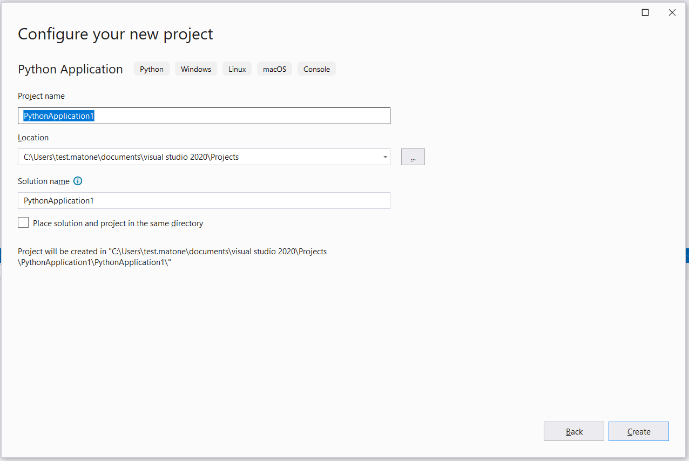

5. Microsoft Visual Studio¶
To setup Microsoft Visual Studio to work via external IDE please follow the steps below:
Install RPyC package. For more information on how to do so, please refer to the following section: Installing extra packages (optional).
Launch Visual Studio and install Python language support for Visual Studio. This is readily available for Visual Studio 2017 onwards; for Visual Studio 2015 and older, please download and install Python Tools for Visual Studio (PTVS).
- Click on Solution Explorer -> File -> New -> Project
- If the Python language support is already installed, continue from step 3
- Install Python language support for Visual Studio
- Click on Install more tools and features
- Select Python language support under Python Development and click the Modify button. (Note that Visual Studio needs to be closed when installing Python language support)
Next, configure your project. Click on Solution Explorer -> File -> New -> Project and select Python Application.
The next step is to set up the Python environment.
- If Python 3.10 is not the default environment under Python Environments, right click on Python Environments in the Solutions Explorer on the right of the window and click on Add Environment
- Then, click on Existing Environment and set the Prefix path to the location of Python 3.10 and ensure that the Interpreter path is set to python.exe. (This location should reflect the Python directory where the RPyC and PyQt5 packages have been installed)
Click on Solution Explorer, then right-click on Search Paths and select Add Folder to Search Path…
Browse to the location where 3-matic is installed and click Select Folder. For example: “C:\Program Files\Materialise\3-matic 18.0 (x64)”
It is recommended that you relaunch the application.
{kind=link}
{kind=link}
{kind=link}
{kind=link}
{kind=link}
Disclaimer: All external IDEs mentioned in this chapter are property of their respective owners.